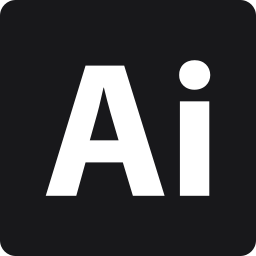

Resumo Profissional
Desenvolvedor Frontend com três anos de experiência na construção de interfaces web responsivas utilizando JavaScript e React, com integração a APIs REST para consumo e manipulação de dados. Atuação focada em componentização, boas práticas de UI/UX, performance e acessibilidade, desde a prototipação no Figma até a implementação final. Vivência em ambientes ágeis, utilizando Git e colaboração em equipe.
Histórico Profissional
Desenvolvedor Front-end Jr
2024 — 2026- Desenvolvimento de interfaces web responsivas e aplicações institucionais utilizando JavaScript e React, com foco em usabilidade, acessibilidade e performance, integrando aplicações frontend a APIs REST para consumo e manipulação de dados.
- Criação de interfaces interativas a partir de protótipos no Figma, traduzindo fluxos e layouts em soluções funcionais alinhadas aos princípios de UI/UX.
- Implementação de componentes reutilizáveis e layouts dinâmicos, seguindo boas práticas de organização de código, padronização visual e experiência do usuário, com renderização dinâmica baseada em dados de API.
- Desenvolvimento de landing pages e sites institucionais em WordPress, com foco em performance, responsividade e consistência visual, realizando customizações no frontend e integração com layouts dinâmicos.
Desenvolvedor Fullstack Jr
2019 — 2020- Desenvolvimento e manutenção de aplicações em C# .NET, atuando no suporte a funcionalidades existentes e na implementação de melhorias.
- Apoio na documentação de requisitos técnicos e funcionais, além da execução de testes utilizando NUnit para validação de novas funcionalidades e correções.
- Manutenção e suporte em ambientes de desenvolvimento, auxiliando na identificação e resolução de problemas técnicos em conjunto com a equipe.
Suporte Técnico
2018 — 2019- Prestação de suporte técnico presencial e remoto a professores e alunos em sistemas e ferramentas de TI, garantindo continuidade das atividades acadêmicas.
- Diagnóstico e resolução de problemas técnicos, atuando na manutenção de ambientes de software e no suporte a usuários.
- Apoio às equipes de desenvolvimento, auxiliando na identificação de demandas técnicas e na resolução de incidentes em ambientes operacionais.
Formação Acadêmica
Análise e Desenvolvimento de Sistemas
2021 — 2024Técnico em Informática para Internet
2018 — 2020Stack Tecnológica
React
JavaScript
C# .NET
Git
WordPress
APIs REST
UI / UX
Figma
Photoshop

Illustrator
Docker
SQL / Relacionais